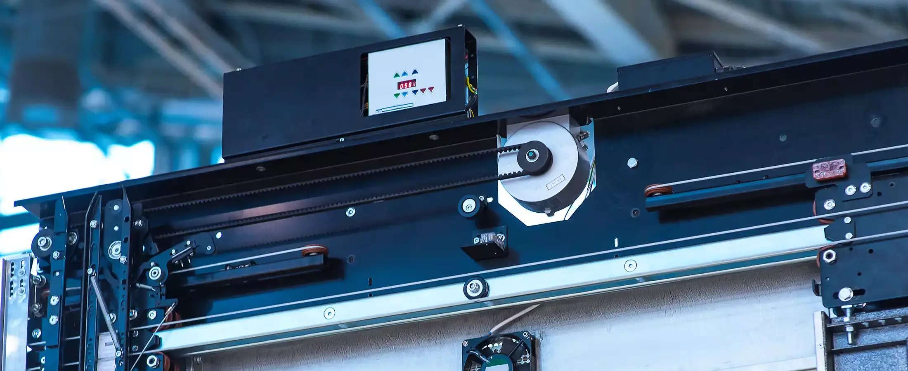
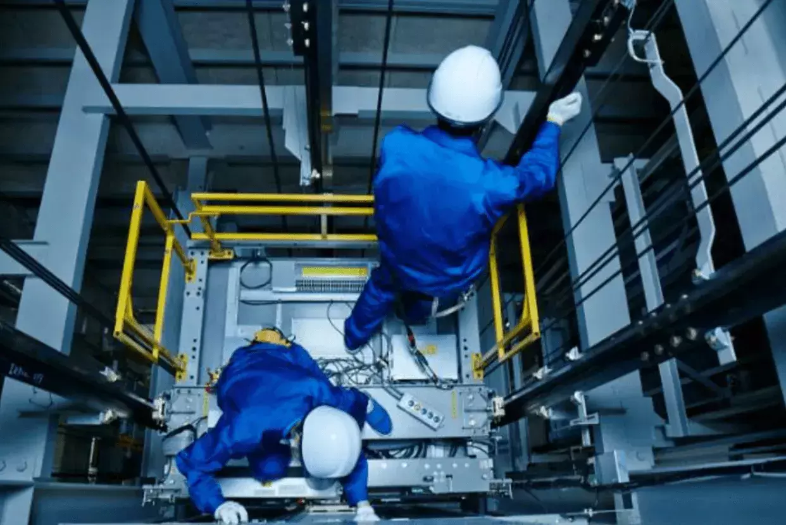

Sectors Supported
Commercial Lifts
Various types of commercial lifts cater to the diverse needs and preferences of their occupants.

Various types of commercial lifts cater to the diverse needs and preferences of their occupants.
Understanding the unique functionalities of each type can help property managers make informed decisions when selecting the most suitable lift for their commercial properties.

Traction lifts, renowned for their sturdiness and reliability, are commonly used to transport passengers in commercial settings. Operating on a system of ropes and pulleys, traction lifts offer smooth vertical transportation, making them ideal for high-traffic areas such as office buildings, hotels, and shopping centres.

Low pit lifts are specifically designed to accommodate buildings with limited space constraints. Featuring a shallow pit requirement compared to traditional lifts, low pit lifts offer an efficient solution for properties where excavation for a deep pit is not feasible. These lifts are often preferred in retrofit projects or buildings with basement levels.
Hydraulic lifts are prized for their robustness and efficiency. They use hydraulic fluid to power the lifting mechanism and are known for their smooth ride quality and minimal maintenance requirements. Hydraulic lifts are commonly installed in commercial properties where reliability and energy efficiency are paramount.

Machine room-less (MRL) lifts are revolutionising the commercial lift industry with their space-saving design and modern aesthetics. Unlike traditional lifts that require a separate machine room for housing the lift machinery, MRL lifts integrate the equipment within the shaft structure, maximising usable space in the building. This innovative design makes MRL lifts an attractive choice for architects and property developers seeking sleek, contemporary lift solutions for their commercial projects.
Understanding the distinct characteristics and advantages of each type of commercial lift is crucial for property managers looking to enhance vertical transportation within their buildings. Businesses can ensure efficient and reliable mobility for their tenants and visitors by choosing the right lift type.
Installing a commercial lift is a meticulous process that requires careful planning, coordination, and expertise. The comprehensive nature of this process, which includes understanding the timeline and considerations involved, should reassure property managers about the quality of work and the attention to detail involved in the installation of a new lift in their commercial properties.
A typical commercial lift installation takes six to ten weeks to complete. However, the exact duration may vary depending on various factors, such as the height of the building, accessibility to the installation site, and the complexity of features or functionalities required for the lift.
Several factors can influence the duration of the installation process:
The installation process typically follows these key steps:
Property managers can effectively plan to install a new commercial lift in their buildings by following a checklist or timeline that includes the key steps and their respective durations.
Regular maintenance is vital for ensuring the safety and reliability of commercial lifts. Property managers can extend the lifespan of their lifts and minimise disruptions to building operations by adhering to a comprehensive maintenance schedule.
Commercial lifts typically require maintenance every three to six months. The frequency may vary based on the age of the lift, usage patterns, and the manufacturer's recommendations. Regular servicing helps prevent unexpected breakdowns and ensures all safety mechanisms are functioning correctly.
Essential maintenance tasks include:
Neglecting regular maintenance can lead to costly repairs, extended downtime, and potential safety hazards. A well-maintained lift operates more efficiently, consumes less energy, and provides a smoother experience for passengers. Proactive maintenance also helps property managers comply with regulatory requirements and avoid penalties.
Under the Lifting Operations and Lifting Equipment Regulations (LOLER) 1998, all commercial lifts in the UK must undergo a thorough examination by a competent person at least every six months. Property managers are legally responsible for ensuring their lifts are maintained and inspected in accordance with these regulations. Failure to comply can result in enforcement action, fines, or prosecution.
Safety inspections are a critical component of commercial lift management. Regular and thorough inspections help identify potential hazards, ensure compliance with safety regulations, and protect the wellbeing of all lift users.
A thorough safety inspection covers the following areas:
Under LOLER regulations, commercial lifts must be thoroughly examined at least every six months by a competent person. Additional inspections may be required following any significant modification, incident, or extended period of non-use. Property managers should also conduct routine visual checks between formal inspections.
Failing to conduct regular safety inspections can lead to serious consequences, including equipment failure, passenger entrapment, injury, or worse. Property managers may also face legal liability, enforcement action from the Health and Safety Executive (HSE), and significant financial penalties. Maintaining a consistent inspection schedule is both a legal obligation and a moral responsibility.
Safety inspections must be carried out by a competent person — typically a specialist lift engineer or an approved inspection body. These professionals have the training, experience, and equipment necessary to conduct thorough examinations and identify issues that may not be apparent to untrained personnel.
Even with diligent maintenance, commercial lifts may occasionally experience issues. Understanding how to identify problems early and respond appropriately can minimise downtime and protect the safety of building occupants.
Common signs that a commercial lift may be malfunctioning include:
When a lift malfunction is identified, the first step is to take the lift out of service to prevent further use until the issue is resolved. Property managers should contact a qualified lift engineer immediately to diagnose and repair the fault. Clear signage should be placed to inform building occupants, and alternative arrangements (such as directing users to another lift or stairwell) should be communicated promptly.
Troubleshooting commercial lift issues typically involves assessing environmental factors, such as temperature fluctuations or humidity levels, which can impact lift performance. Regular inspection of lift components, including doors, safety sensors, and control panels, helps identify potential issues early and prevent costly repairs. Property managers can ensure the continued functionality and safety of commercial lifts in their buildings by prioritising proactive maintenance and prompt response to lift malfunctions.
All lift repairs should be carried out by qualified and experienced lift engineers. Attempting to repair lift equipment without proper training and tools can result in further damage, void warranties, and — most importantly — pose serious safety risks. A reputable lift service provider will diagnose the root cause of the issue, carry out repairs using genuine parts, and conduct thorough testing before returning the lift to service.
Whether you need a new installation, maintenance plan, or emergency repair, our team of experts is here to help. Get in touch for a free, no-obligation consultation.